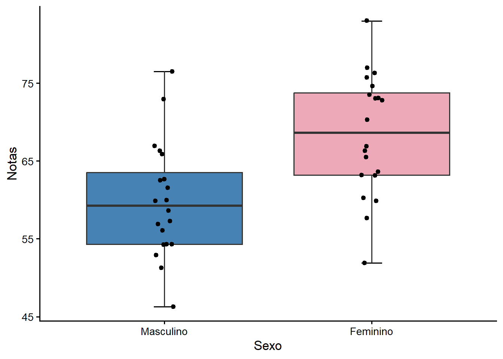
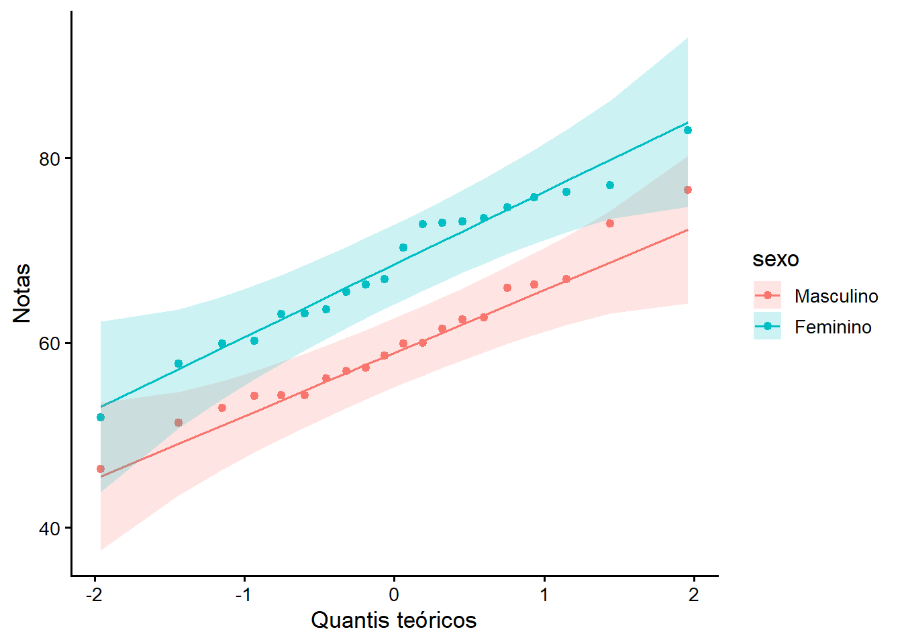
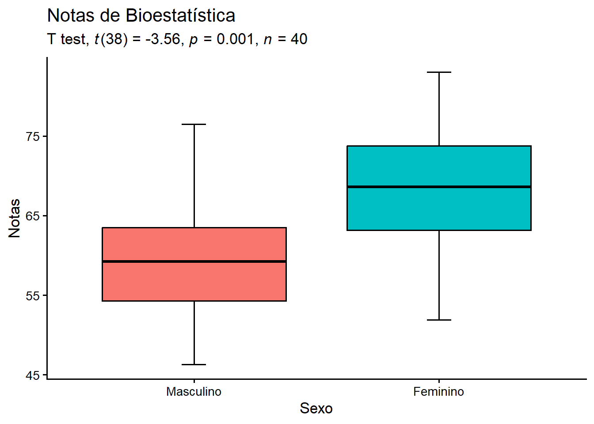
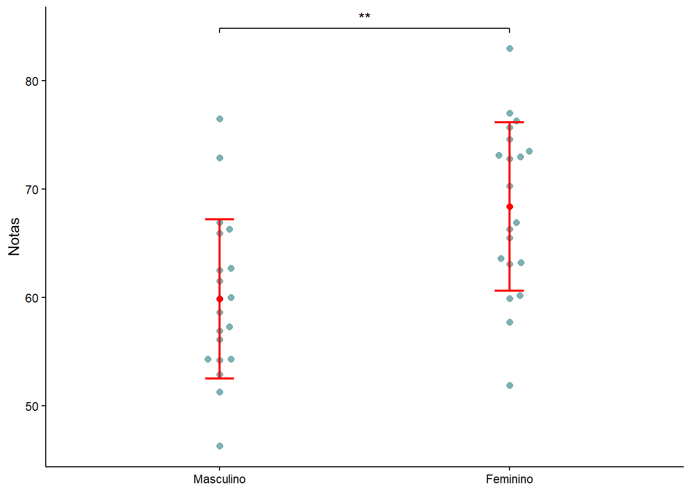
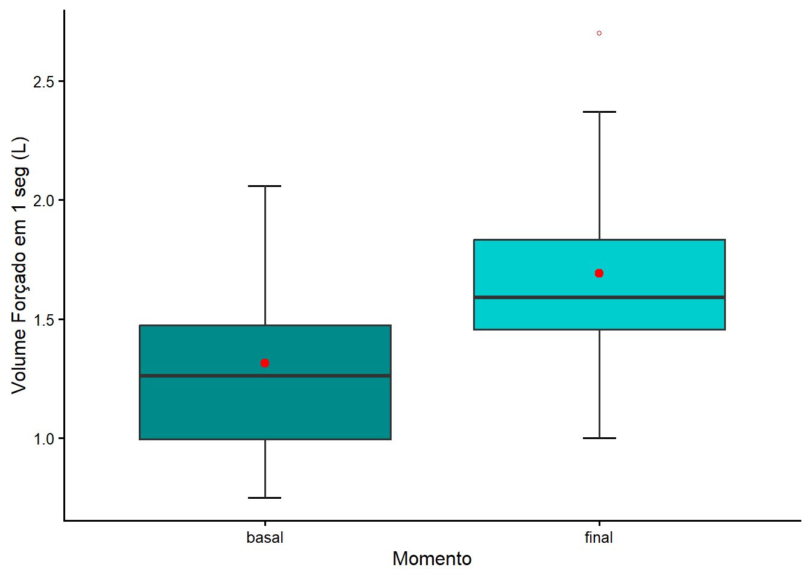
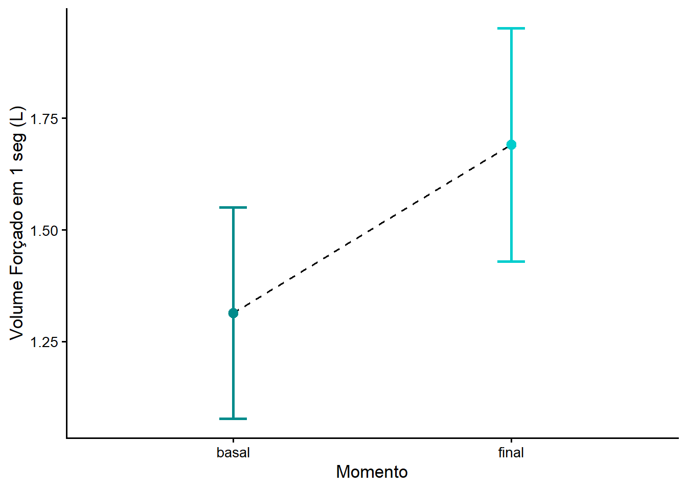
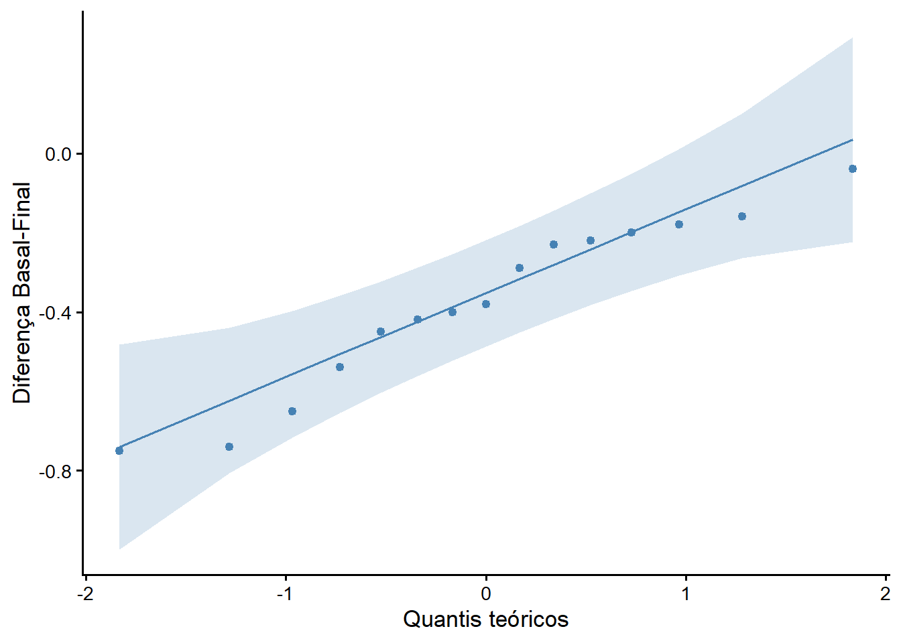
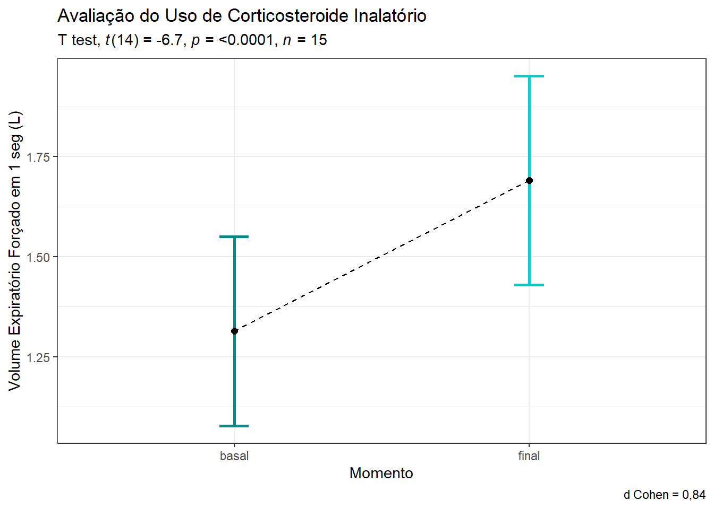
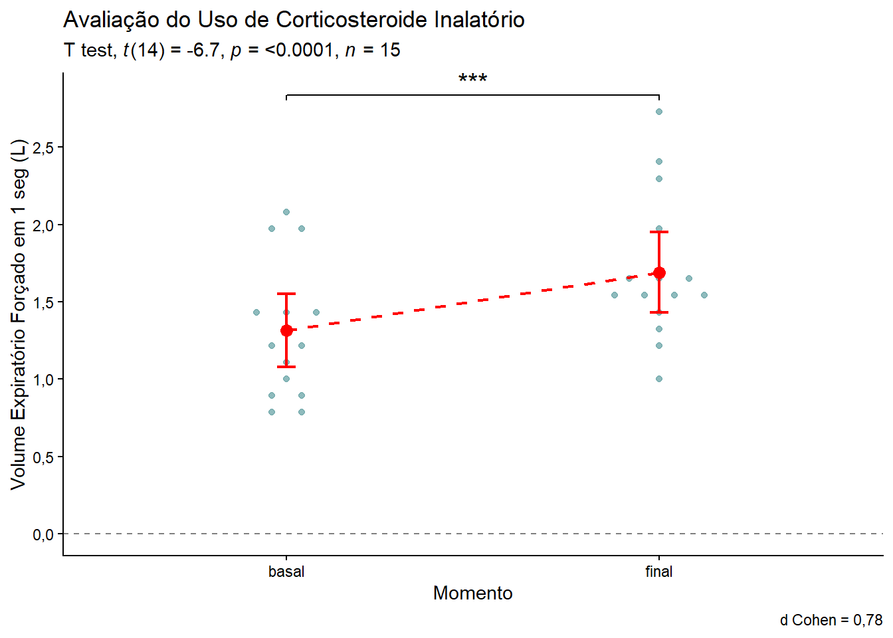

if(!require("pacman")) {install.packages("pacman")}
pacman::p_load(car,
effectsize,
flextable,
ggbeeswarm, ggpubr,
ggsignif,
ggsci,
readxl,
report,
scales,
rstatix,
tidyverse)14 Comparação entre duas médias
14.1 Pacotes necessários para este capítulo
14.2 Teste t para amostras independentes
O teste t de amostras independentes é usado para comparar duas médias de amostras de grupos não relacionados. Isso significa que há pessoas diferentes fornecendo escores para cada grupo. O objetivo desse teste é determinar se as médias das amostras são diferentes entre si.
14.2.1 Dados usados neste capítulo
Para responder a seguinte pergunta de pesquisa:
A nota em Bioestatística de homens e mulheres difere estatisticamente?
Foram coletadas, em uma determinada Universidade, as notas de Bioestatística de uma turma de 40 alunos. Estes dados estão aqui. Baixe e salve o mesmo no seu diretório de trabalho para a leitura dos dados.
14.2.1.1 Leitura dos dados
Os dados serão lidos com a função read_excel(), incluída no pacote readxl, e serão designados a um objeto dados.
A seguir, para exibir a estrutura interna do objeto, será usada a função str():
dados <- readxl::read_excel("dados/dadosNotas.xlsx")
str(dados)tibble [40 × 2] (S3: tbl_df/tbl/data.frame)
$ notas: num [1:40] 63.1 76.3 57.7 66.9 73.1 70.3 63.6 75.7 73.5 83 ...
$ sexo : num [1:40] 2 2 2 2 2 2 2 2 2 2 ...O conjunto de dados é um tibble que contém uma variável numérica notas com 40 observações e uma variável sexo também com 40 observações. O R leu esta variável como numérica, mas ela é uma variável categórica e deve ser transformada em fator, usando a função mutate() do pacote dplyr.
dados <- dados |>
mutate(sexo = factor(sexo,
levels = c(1, 2),
labels = c("Masculino", "Feminino")))
str(dados)tibble [40 × 2] (S3: tbl_df/tbl/data.frame)
$ notas: num [1:40] 63.1 76.3 57.7 66.9 73.1 70.3 63.6 75.7 73.5 83 ...
$ sexo : Factor w/ 2 levels "Masculino","Feminino": 2 2 2 2 2 2 2 2 2 2 ...A variável sexo, agora, está correta. É uma variável categórica com dois níveis: Masculino e Feminino.
14.2.1.2 Exploração e resumo dos dados
Serão calculadas algumas métricas descritivas para melhor explorar os dados. Para isso, as notas dos alunos serão divididas em dois grupo, de acordo com o sexo. Essa ação será realizada pela função de agrupamento group_by() e pela função resumidora summarise, ambas do pacote dplyr. O objeto resumo receberá os resultados:
resumo <- dados |>
dplyr::group_by(sexo) |>
dplyr:: summarise(n = n(),
media = mean(notas, na.rm = TRUE),
dp = sd(notas, na.rm = TRUE),
mediana = median(notas, na.rm = TRUE),
Q1 = quantile(notas,0.25, na.rm = TRUE),
Q3 = quantile(notas, 0.75, na.rm = TRUE),
me = 1.96 * dp/sqrt(n))
resumo# A tibble: 2 × 8
sexo n media dp mediana Q1 Q3 me
<fct> <int> <dbl> <dbl> <dbl> <dbl> <dbl> <dbl>
1 Masculino 20 59.9 7.34 59.2 54.3 63.5 3.22
2 Feminino 20 68.4 7.79 68.6 63.2 73.8 3.41Uma outra maneira de obter um resumo dos dados é usar a função nativa summary():
summary(dados) notas sexo
Min. :46.30 Masculino:20
1st Qu.:57.60 Feminino :20
Median :63.15
Mean :64.12
3rd Qu.:72.83
Max. :83.00 A saída mostra as estatísticas descritivas mais comuns das variáveis numéricas (min, Q1, mediana, média, Q3, max) e a distribuição das variáveis categóricas. Se existirem valores ausentes (NAs) eles aparecem.
A saída informa que a média das notas das mulheres é 68.4, bem acima das notas dos homens, mostrando uma diferença nos escores de 8.5. Parece que o desempenho das mulheres em Bioestatística é melhor do que o dos homens!
Além do resumo numérico, é interessante construir um gráfico do tipo boxplot (Figura 14.1), usando o pacote ggplot2 (veja Seção 8.3) para observar a distribuição dos dados:
ggplot2::ggplot(data = dados, aes(x = sexo,
y = notas,
fill = sexo)) +
geom_errorbar(stat = "boxplot", width = 0.1) +
geom_boxplot() +
geom_jitter(width = 0.05) +
scale_fill_manual(values = c("steelblue","pink2")) +
labs (x = "Sexo",
y = "Notas") +
theme_classic(base_size = 13) +
theme(legend.position="none")
Os boxplot sugerem que as notas dos alunos diferem, de acordo o sexo.
14.2.2 Definição das hipóteses estatísticas
As hipóteses comparam as médias dos dois grupos. Para um teste bicaudal, as hipóteses são escritas como:
\[H_{0}: \mu_{F} = \mu_{M}\]
\[H_{1}: \mu_{F} \neq \mu_{M}\]
14.2.3 Definição da regra de decisão
O nível significância escolhido, \(\alpha\), é igual a 0.05. A distribuição t é dependente dos graus de liberdade, dados por:
No exemplo,
n1 <- resumo$n[1]
n2 <- resumo$n[2]
gl <- n1 + n2 - 2
gl[1] 38Para um \(\alpha = 0,05\), o valor crítico de t para gl =38 para uma hipótese alternativa bicaudal é obtido com a função qt (p, df), onde \(df = gl\) e \(p = 1 - \alpha/2\)
alpha <- 0.05
p <- 1 - alpha/2
tc <- round (qt((1-alpha/2), gl), 3)
tc[1] 2.024Portanto, se
\[|t_{calculado}| < |t_{crítico}| \to não \quad se \quad rejeita \quad H_{0}\]
\[|t_{calculado}| \ge |t_{crítico}| \to rejeita-se \quad H_{0}\]
14.2.4 Teste estatístico
Para determinar se existe uma diferença estatisticamente significativa entre as médias das notas de dois grupos, será usado o teste t para duas amostras independentes, também conhecido como teste t de Student, baseado na distribuição de mesmo nome (Seção 12.5.1).
14.2.4.1 Lógica do teste t
O teste t compara as médias de duas amostras independentes, usando o erro padrão como métrica da diferença entre essas médias. Quanto maior o valor de t , maior a probabilidade de que as amostras pertençam a grupos diferentes, ocorrendo nessas circunstâncias a rejeição da hipótese nula (1).
Calcula-se o teste t com a seguinte equação:
\[t = \frac{(\bar{x}_1 - \bar{x}_2) - (\mu_1 - \mu_2)}{EP_{d}}\]
Onde \(EP_d\) é o erro padrão da diferença entre a médias \(\bar{x}_1 - \bar{x}_2\). Se a hipótese nula for verdadeira, as amostras foram retiradas da mesma população e, portanto, \(\mu_1 - \mu_2 = 0\). Assim, a equação fica:
\[t = \frac{(\bar{x}_1 - \bar{x}_2)}{EP_d}\]
O erro padrão da diferença \(\bar{x}_1 - \bar{x}_2\) é calculado de maneiras diferentes:
- Se a variâncias nos dois grupos forem iguais, usa-se:
\[EP_d = \sqrt{s_o^2(\frac{1}{n_1}+\frac{1}{n_2})}\]
Onde \(s_o^2\) é a variância combinada ou conjugada que é, simplesmente, a média ponderada das variância dos grupos:
\[s_o^2 = \frac{(n_1 - 1)s_1^2 + (n_2 -1)s_2^2}{(n_1 -1)+ (n_2-1)}\]
Quando os grupos têm o mesmo tamanho (\(n_1 = n_2\)), \(s_o^2\) é simplesmente a média aritmética da variância dos grupos:
\[s_o^2 = \frac {s_1^2 + s_2^2}{2}\]
\[EP_d = \sqrt{\frac{2 s_o^2}{n}}\]
- Se as variâncias dos dois grupos forem diferentes:
\[EP_d = \sqrt{\frac{s_1^2}{n_1}+\frac{s_2^2}{n_2}}\]
Esta explicação da lógica e dedução da estatística de teste serve para uma melhor compreensão de como o teste funciona, mas para executar um teste t não há necessidade disso, basta saber como encaminhar ao R e como interpretar o resultado fornecido por ele.
14.2.4.2 Pressupostos do teste t
O teste t assume que:
- As amostras são independentes;
- Deve haver distribuição normal. Entretanto, quando as amostras são grandes (teorema do limite central), isso não é muito importante;
- Exista homocedasticidade, ou seja, as variâncias dos grupos devem ser iguais.
Violar o pressuposto de número 3 tem importância se os tamanhos dos grupos forem diferentes. Se os grupos tiverem o mesmo tamanho e a amostra for grande, este pressuposto torna-se menos importante, não preocupando muito se essa hipótese foi violada (2). O pressuposto tem mais importância em grupos pequenos e desiguais. Existe um teste, denominado teste t de Welch que corrige essa violação. É possível portanto, esquecer esse pressuposto e fazer o teste de Welch sempre.
Avaliação da normalidade
Uma boa parte dos procedimentos estatísticos são testes paramétricos 1 com base na distribuição normal. Ou seja, se assume que a distribuição dos dados segue o modelo da distribuição normal. Se essa suposição não for atendida, a lógica por trás do teste de hipóteses pode ser violada.
1 Testes paramétricos são testes estatísticos que se baseiam nos padrões da distribuição populacional da variável em estudo, por exemplo, a distribuição normal é descrita por dois parâmetros – média e desvio padrão – que são suficientes para se conhecer as probabilidades. Os testes que não requerem a especificação da forma de distribuição da população, ou seja, têm distribuição livre, são denominados de não paramétricos.
2 Veja também a Seção 10.3.1.2.
Pode-se verificar a normalidade de maneira visual, observando o comportamento dos dados através de gráficos como o próprio boxplot (Figura 14.1), onde se observa que as medianas dos boxplots se encontra praticamente no centro das caixas. Outra forma, é o gráfico Q-Q (Figura 14.2). O gráfico QQ (ou gráfico quantil-quantil) desenha a correlação entre uma determinada amostra e a distribuição normal. Uma linha de referência de 45 graus também é plotada. Um gráfico Q-Q é um gráfico de dispersão criado plotando dois conjuntos de quantis um contra o outro. Se ambos os conjuntos de quantis vierem da mesma distribuição, observa-se os pontos formando uma linha aproximadamente reta. Se os valores caírem na diagonal do gráfico, a variável é normalmente distribuída. Os desvios da diagonal mostram desvios da normalidade. Para desenhar um gráfico Q-Q pode ser usado a função ggqqplot ()2 do pacote ggpubr((3)) que produz um gráfico QQ normal com uma linha de referência, acompanhada de área sombreada, correspondente ao IC95%.
ggpubr::ggqqplot(dados,
x = "notas",
color = "sexo") +
labs(y = "Notas",
x = "Quantis teóricos") +
theme_classic(base_size = 13)
Observando os gráficos, verifica-se que a variável notas tem uma distribuição visualmente normal aceitável em ambos grupos, pois os gráficos Q-Q mostram que os dados seguem aproximadamente a linha diagonal.
Outra maneira de analisar a normalidade é verificar se a distribuição como um todo se desvia de uma distribuição normal comparável. Para isso, usam-se testes estatísticos de normalidade. Os dois principais são o teste de Shapiro-Wilk e o teste de Kolmogorov-Smirnov (K-S).
Esses testes comparam os dados da amostra com um conjunto de valores normalmente distribuídos com a mesma média e desvio padrão. Se o teste não for significativo (p > 0,05), informa-se que a distribuição da amostra não é significativamente diferente de uma distribuição normal. Se, no entanto, o teste for significativo (p \(\le\) 0,05), a distribuição em questão será significativamente diferente de uma distribuição normal.
O método de Shapiro-Wilk é amplamente recomendado para teste de normalidade (4), (5), (6).
sw <- dados |>
dplyr::group_by(sexo) |>
rstatix::shapiro_test(notas)
sw# A tibble: 2 × 4
sexo variable statistic p
<fct> <chr> <dbl> <dbl>
1 Masculino notas 0.972 0.802
2 Feminino notas 0.973 0.812A saída mostra que ambos valores p do teste, 0.802 e 0.812, estão acima de 0,05, corroborando com a não rejeição da normalidade dos dados.
Homogeneidade da Variância
Na visualização da Figura 14.1, nos dois grupos de alunos, observa-se que há, entre os limites inferior e superior, uma dispersão das notas em torno da região central. Esta dispersão parece ser semelhante. Isto sugere que haja homogeneidade das variâncias.
Portanto, homogeneidade da variância é o pressuposto de que a dispersão das medidas é aproximadamente igual em diferentes grupos de casos, ou que a dispersão dos valores são aproximadamente iguais em pontos diferentes da variável preditora.
Além do aspecto visual, a homogeneidade da variância pode ser testada com o teste de Levene. Neste teste, a \(H_{0}\) é todas as variâncias são iguais. No R, uma função que calcula o teste é leveneTest() do pacote car (7). Os argumentos são:
- y \(\to\) variável de resposta para o método padrão ou um objeto
lmoufórmula. Seyfor um objeto de modelo linear ou uma fórmula, as variáveis do lado direito do modelo devem ser todas fatores e devem ser completamente cruzadas; - group \(\to\) fator que define os grupos;
- center \(\to\) O nome de uma função para calcular o centro de cada grupo;
meanfornece o teste de Levene original; o padrão,median, fornece um teste mais robusto; - data \(\to\) conjunto de dados para avaliar a
formula.
levene <- car::leveneTest(notas~sexo,
center = mean,
data = dados)
leveneLevene's Test for Homogeneity of Variance (center = mean)
Df F value Pr(>F)
group 1 0.4575 0.5029
38 A saída do teste de Levene retorna um valor p > 0,05, confirma a impressão visual dos boxplots de que os grupos têm homogeneidade das variâncias, portanto a hipótese nula de igualdade das variâncias não pode ser rejeitada.
O rstatix também tem uma função para calcular o teste de Levene (?levene_test). Esta função tem a vantagem de ser pipe-friendly. Os resultados são os mesmos porque a função levene_test() do pacote rstatix (8) é um wrapper em torno da função leveneTest() do pacote car. Ou seja, ela chama internamente a função car::leveneTest(), mas oferece uma interface mais simples.
teste_levene <- dados |>
rstatix::levene_test(formula = notas ~ sexo,
center = "mean")
teste_levene# A tibble: 1 × 4
df1 df2 statistic p
<int> <int> <dbl> <dbl>
1 1 38 0.458 0.50314.2.4.3 Execução do teste t de Student
Os pressupostos do teste não foram violados, portanto ele pode ser realizado com confiança. Será utilizado a função t_test() do pacote rstatix para calcular o teste t. Ele fornece uma estrutura compatível com operador pipe |> (pipe-friendly) para executar testes t de uma e duas amostras. Para consultar os argumentos, consulte a ajuda do RStudio.
teste <- dados |> rstatix::t_test(formula = notas ~ sexo,
detailed = TRUE,
var.equal = TRUE)
print(teste, n =Inf, width = Inf)# A tibble: 1 × 15
estimate estimate1 estimate2 .y. group1 group2 n1 n2 statistic
* <dbl> <dbl> <dbl> <chr> <chr> <chr> <int> <int> <dbl>
1 -8.51 59.9 68.4 notas Masculino Feminino 20 20 -3.56
p df conf.low conf.high method alternative
* <dbl> <dbl> <dbl> <dbl> <chr> <chr>
1 0.00102 38 -13.4 -3.67 T-test two.sided A saída retorna a estimativa da diferença média (-8.51), as estimativas das médias dos grupos (arredondadas), a estatística do teste (-3.56) o valor p (0.0010203), graus de liberdade (38)3 e outras métricas. Foram colocados, na função print(), os argumentos n = Inf e width = Inf para evitar que a saída seja truncada e abreviada.
3 Se as variâncias forem diferentes (var.equal = FALSE), o teste calcula os graus de liberdade pela fórmula de Welch, bem mais complicada.
Também é possível ver os resultados do teste t , usando o objeto teste que os recebeu. Por exemplo, os limites inferior (conf.low) e superior (conf.high) do intervalo de confiança de 95% da estimativa da diferença entre as médias.
IC95 <- round(c(teste$conf.low, teste$conf.high),3)
IC95[1] -13.359 -3.67114.2.5 Tamanho do Efeito
A significância estatística deve ter uma atenção relativa do pesquisador, pois ela apenas mede a probabilidade de rejeitar uma hipótese nula, uma vez que ela seja verdadeira. Ajudam a determinar, em uma pesquisa, a significância dos resultados encontrados em relação à hipótese nula, mas não informam nada em relação a magnitude do efeito. Por exemplo, mostra se determinado tratamento afeta as pessoas, mas não dizem quanto isso as afeta.
O tamanho do efeito (effect size) é uma medida quantitativa da magnitude do efeito. Quanto maior o tamanho do efeito, mais forte é a relação entre duas variáveis. É possível observar o tamanho do efeito ao comparar dois grupos quaisquer para ver quão substancialmente diferentes eles são.
Normalmente, em ensaios clínicos tem-se um grupo de tratamento e um grupo de controle. O grupo de tratamento é uma intervenção que se espera efetue um resultado específico. O valor do tamanho do efeito mostrará se a terapia teve um efeito pequeno, médio ou grande. Isso tem mais relevância do que simplesmente informar o tamanho do valor p.
14.2.5.1 d de Cohen
O d de Cohen(9) (10) é uma medida adequada e bastante popular para encontrar a magnitude do efeito na comparação entre duas médias quando o n > 20 e as variâncias são semelhantes.
Para calcular essa diferença média padronizada se verifica a diferença entre as médias dos dois grupos e se divide pelo desvio padrão agrupado (\(s_{p}\)):
\[d = \frac{(\bar{x}_1 - \bar{x}_2)}{s_{p}}\]
Onde,
\[s_o =\sqrt \frac{(n_1 - 1)s_1^2 + (n_2 -1)s_2^2}{n_1 + n_2 - 2}\]
Voltando ao exemplo das notas dos alunos de Bioestatística, o d de Cohen pode ser calculado, usando a função cohens_d() do pacote effectsize (11):
d <- effectsize::cohens_d(notas ~ sexo, data = dados, paired = F)
dCohen's d | 95% CI
--------------------------
-1.13 | [-1.79, -0.45]
- Estimated using pooled SD.Agora, como interpretar este resultado de -1.13, 0.95, -1.79, -0.45? Sua interpretação não é intuitiva, recomenda-se usar a Tabela 14.1 para interpretar (9).
d de Cohen | Interpretação (Cohen,1988) |
|---|---|
0,2 < 0,5 | pequeno |
0,5 < 0,8 | médio |
>= 0,8 | grande |
Assim, as notas dos alunos diferem significativamente (p = 0.0010203) de acordo com o sexo, sendo que as mulheres têm notas mais altas do que os homens e a magnitude dessa diferença é grande (d = -1.13, 0.95, -1.79, -0.45). O sinal fica negativo porque a média das mulheres (segundo grupo) é mais alta que a dos homens. A interpretação do efeito usa |d|, não o sinal.
A função interpret_cohens_d() do pacote effectsize permite ver direto a interpretação da magnitude do efeito:
effectsize::interpret_cohens_d(d, rules = "cohen1988")Cohen's d | 95% CI | Interpretation
-------------------------------------------
-1.13 | [-1.79, -0.45] | large
- Estimated using pooled SD.
- Interpretation rule: cohen1988Shlomo Sawilowsky propôs uma expansão (12) para a interpretação tradicional do d de Cohen (pequeno, médio, grande), incluindo mais categorias (Tabela 14.2), adaptadas para estudos que observam diferenças maiores .
d de Cohen | Interpretação (Sawilowsky,2009) |
|---|---|
< 0,20 | muito pequeno |
0,20 < 0,50 | pequeno |
0,50 < 0,80 | médio |
0,80 < 1,20 | grande |
1,20 < 2,00 | muito grande |
>= 2,00 | enorme |
effectsize::interpret_cohens_d(d, rules = "sawilowsky2009")Cohen's d | 95% CI | Interpretation
-------------------------------------------
-1.13 | [-1.79, -0.45] | large
- Estimated using pooled SD.
- Interpretation rule: sawilowsky200914.2.5.2 g de Hedges
É uma correção do d de Cohen para amostras pequenas (n < 20) ou quando as amostras são muito diferentes. Corrige o “viés para cima” que o d de Cohen apresenta em amostras pequenas, sendo conhecido como um tamanho de efeito corrigido.
É dados pela fórmula
\[g = d \ \times \ J\]
Onde J é o fator de correção do d de Cohens e é igual a
\[J = 1 \ - \ \frac{3}{4(n_{1}+n_{2})-9} \]
g <- effectsize::hedges_g(notas ~ sexo, data = dados, paired = F)Que pode ser interpretado tanto pelas regras de cohen1988 como pela de sawilowsky2009, usando a função interpret_cohens_g():
effectsize::interpret_hedges_g(g, rules = "sawilowsky2009")Hedges' g | 95% CI | Interpretation
-------------------------------------------
-1.10 | [-1.75, -0.44] | large
- Estimated using pooled SD.
- Interpretation rule: sawilowsky200914.2.5.3 Delta (\(\Delta\)) de Glass
O delta (\(\Delta\)) de Glass deve ser usado quando as variâncias entre os grupos são muito diferentes (heterogêneas). É mais robusto que os outros dois quando a suposição de homogeneidade de variância é violada.
Divide a diferença das médias pelo desvio-padrão de apenas um dos grupos, geralmente o grupo de controle. Para isso, supõe-se que o desvio padrão deste não é afetado pelos efeitos do tratamento, refletindo melhor o desvio padrão populacional (13).
delta <- effectsize::glass_delta(notas ~ sexo, data = dados)
deltaGlass' delta (adj.) | 95% CI
------------------------------------
-1.05 | [-1.71, -0.37]Pode ser interpretado como feito com o g de Hedges, usando a mesma função com a interpretação de sawilowsky2009:
effectsize::interpret_glass_delta(-1.05, rules = "sawilowsky2009")[1] "large"
(Rules: sawilowsky2009)14.2.6 Conclusão
Como \(|t_{calculado}|\) = 3.559 > \(|t_{0,05;38}|\) = 2.024, rejeita-se \(H_{0}\). Observa-se que o valor p é muito pequeno (0.0010203) e, portanto, a diferença observada nas médias dos dois grupos deve ser assumida como significativa.
Assim, pode-se admitir que as médias das notas são diferentes, com probabilidade de erro extremamente pequena. A estimativa da diferença média (\(\mu_1 - \mu_2\)) é fornecida pelo intervalo de confiança de 95% (-13.359, -3.671). Observe que o valor zero não está contido no intervalo e isto confirma a significância estatística da diferença.
Concluindo, as notas de Bioestatística das mulheres e as notas dos homens são diferentes, a diferença (\(\mu_1 - \mu_2\)) encontrada é estatisticamente significativa (t = -3.559, gl = 38, p = 0.0010203), com uma confiança de 95%.
Esta conclusão pode ser visualizada em um gráfico (Figura 14.3) que exibirá a saída do teste t:
- Construir dois boxplots, usando o
ggplot2com cores do New England Journal of Medicine (NEJM), do pacoteggsci. Atribuir a um objetobp:
bp <- ggplot(dados, aes(x=sexo, y=notas)) +
geom_errorbar(stat = "boxplot", width = 0.1)+
geom_boxplot(aes(fill = sexo),
color = "black")+
scale_color_nejm() +
theme_classic(base_size = 13) +
theme(legend.position="none")- Adicionar ao boxplot novos rótulos e os testes realizados:
bp +
labs(x = "Sexo",
y = "Notas",
title = "Notas de Bioestatística",
subtitle = rstatix::get_test_label(stat.test = teste,
correction = "none",
detailed = TRUE,
type = "expression",
p.col = "p"))
Uma alternativa ao boxplot é usar o gráfico dotplot (Figura 14.4), função geom_beeswarm() e uma barra de erro e a significância 4:
4 Se o p for pequeno é convertido para *, **, *** em função da ação do argumento map_signif_level = TRUE da função ggsignif() do pacote ggsignif. Para mostrar o valor numérico em vez de asteriscos, trocar para map_signif_level = FALSE. Um asterisco * já indica que o resultado é estatisticamente significativo, ou seja, é \(p < 0,05\) ; ** significa \(p < 0,01\); *** , \(p < 0,001\) e quatro asteriscos (****) são raros e indicam um p extremamente pequeno (\(< 0,0001\)).
ggplot(data = dados, aes(x = sexo, y = notas)) +
ggbeeswarm::geom_beeswarm(method = "swarm",
color = "cadetblue",
alpha = 0.8,
size = 2,
cex = 2) +
geom_errorbar(stat = "summary",
fun.data = "mean_sd",
width = 0.10,
linewidth = 0.8,
linetype = "solid",
color = "red") +
geom_point(stat = "summary", fun = mean, color = "red", size = 2) +
ggsignif::geom_signif(comparisons = list(c("Feminino", "Masculino")),
map_signif_level = TRUE,
textsize = 4,
tip_length = 0.01) +
labs(y = "Notas", x = NULL) +
theme_classic()
14.3 Teste t para grupos pareados
Um teste t pareado é usado para estimar se as médias de duas medidas relacionadas são significativamente diferentes uma da outra. Esse teste é usado quando duas variáveis contínuas são relacionadas porque são coletadas do mesmo participante em momentos diferentes (antes e depois), de locais diferentes na mesma pessoa ao mesmo tempo ou de casos e seus controles correspondentes.
14.3.1 Dados usados nesta seção
O banco de dados é constituído por uma amostra de 15 escolares portadores de asma não controlada. Fizeram avaliação da sua função pulmonar no início do uso de um novo corticoide inalatório. Após 60 dias, repetiram a avaliação da função pulmonar5.
5 O autor entende e recomenda que esta metodologia “ante e depois” deve ser evitada, pois traz consigo importante vieses como regressão à média, efeito placebo ou nocebo, viés temporal, viés de mensuração, etc. Ver Seção 3.5 . O uso aqui tem objetivo didático de mostrar a lógica estatística.
Para baixar o banco de dados, clique aqui. Faça o downloado para o seu diretório de trabalho.
14.3.1.1 Leitura e transformação dos dados
Leia o arquivo dadosPar.xlsx a partir do diretório de trabalho, usando a função read_excel() do pacote readxl. Atribuir os dados a um objeto com o nome dados.
dados <- readxl::read_excel("dados/dadosPar.xlsx")A estrutura dos dados podem ser visualizada, usando a função str():
str(dados)tibble [15 × 3] (S3: tbl_df/tbl/data.frame)
$ id : num [1:15] 1 2 3 4 5 6 7 8 9 10 ...
$ basal: num [1:15] 1.3 1.47 2.06 1.95 1.47 1.13 1.48 0.94 1.05 0.87 ...
$ final: num [1:15] 1.53 1.63 2.35 2.7 2.01 1.53 1.66 1.59 1.5 1.61 ...O dataframe dados encontra-se no formato amplo (wide), ou seja, com as colunas basal e final colocadas lado a lado como se fossem duas variáveis distintas, quando, na realidade, constituem-se em apenas uma variável contendo as medidas de VEF1 (Volume Expiratório Forçado no primeiro segundo).
A função pivot_longer() do pacote tidyr fará a transformação do formato amplo para o longo (long). Este processo não é obrigatório, mas será realizado para fins de treinamento. O novo banco de dados será atribuído ao objeto dadosL. A função pivot_longer() necessita dos seguintes argumentos:
- dados \(\to\) dataframe a ser pivotado, transformado;
- cols \(\to\) colunas a serem transformadas no formato longo;
- names_to \(\to\) Especifica o nome da coluna a ser criada a partir dos dados armazenados nos nomes das colunas de dados;
- values_to \(\to\) Especifica o nome da coluna a ser criada a partir dos dados armazenados nos valores das células;
- … \(\to\) possui outros argumento. Ver ajuda.
dadosL <- dados |>
tidyr::pivot_longer(c(basal, final),
names_to = "momento",
values_to = "medidas") |>
dplyr::mutate(momento = factor(momento,
levels = c("basal", "final")))
str(dadosL)tibble [30 × 3] (S3: tbl_df/tbl/data.frame)
$ id : num [1:30] 1 1 2 2 3 3 4 4 5 5 ...
$ momento: Factor w/ 2 levels "basal","final": 1 2 1 2 1 2 1 2 1 2 ...
$ medidas: num [1:30] 1.3 1.53 1.47 1.63 2.06 2.35 1.95 2.7 1.47 2.01 ...14.3.1.2 Medidas Resumidoras
Para resumir as variáveis, serão usadas as funções group_by() e summarise() do pacote dplyr, aplicadas ao formato longo dadosL:
resumo <- dadosL |>
dplyr::group_by(momento) |>
dplyr::summarise(n = n (),
media = mean(medidas, na.rm = TRUE),
dp = sd (medidas, na.rm = TRUE),
mediana = median (medidas, na.rm = TRUE),
IIQ = IQR (medidas, na.rm =TRUE),
ep = dp/sqrt(n),
me = ep * qt(1 - (0.05/2), n - 1))
resumo# A tibble: 2 × 8
momento n media dp mediana IIQ ep me
<fct> <int> <dbl> <dbl> <dbl> <dbl> <dbl> <dbl>
1 basal 15 1.31 0.427 1.26 0.48 0.110 0.236
2 final 15 1.69 0.471 1.59 0.38 0.122 0.26114.3.1.3 Visualização dos dados
Apenas, por uma questão didática, serão apresentadas maneiras de mostrar os dados visualmente. Podem ser usados qualquer um dos tipos a seguir, pois todos dão, praticamente, a mesma informação.
Boxplot
dadosL |>
ggplot(aes(x = momento, y = medidas, fill = momento)) +
geom_errorbar(stat = "boxplot", width = 0.1) +
geom_boxplot (outlier.color = "red",
outlier.shape = 1,
outlier.size = 1) +
scale_fill_manual(values = c("cyan4","cyan3")) +
ylab("Volume Forçado em 1 seg (L)") +
xlab("Momento") +
stat_summary(fun = mean,
geom = "point",
shape = 19, size = 2, color="red") +
theme_classic(base_size = 13) +
theme(text = element_text(size = 12)) +
theme(legend.position = "none")
A altura da caixa dos boxplots (Figura 14.5)) é o intervalo interquartil (IIQ) e corresponde a 50% dos dados. A linha que corta horizontalmente a caixa é a mediana. Os bigodes da caixa (whiskers) em suas extremidades são os limites inferior e superior dos dados, excluindo os valores atípicos (outliers), representado no boxplot final por um ponto vermelho, acima do limite superior. Os pontos em vermelho (dentro das caixas) representam as médias.
Gráfico de barra de erro
resumo |>
ggplot2::ggplot(aes(x=momento, y=media, group=1)) +
geom_line(linetype ='dashed') +
geom_errorbar(aes(ymin=media - me,
ymax=media + me),
width=0.1,
linewidth = 1,
col = c("cyan4","cyan3")) +
geom_point(size = 3, color = c("cyan4", "cyan3")) +
theme_classic(base_size = 13)+
labs(x='Momento',
y='Volume Forçado em 1 seg (L)')
Este gráfico de barra de erro associado a uma linha (Figura 14.6) mostra uma diferença entre os valores basais e finais.
A escolha do tipo de gráfico depende da ênfase do autor sobre os dados.
14.3.1.4 Criação de uma variável que represente a diferença entre as médias
Em amostras pareadas, a diferença entre os dois valores de dados para cada elemento das duas amostras é denotada por d. Esse valor d é chamado de diferença pareada.
Os valores da média e do desvio padrão, \(\overline{d}\) e \(s_d\), das diferenças pareadas para duas amostras são calculados como:
\[\overline{d} = \frac{\sum d}{n}\]
\[s_{d} = \sqrt \frac{\sum \left ( d - \overline{d} \right )^2}{n - 1}\]
Para criar essa diferença entre as média basal (“antes”) e final (“depois”), d, será usado o banco de dados amplo (dados):
dados$d <- dados$basal - dados$final
head (dados)# A tibble: 6 × 4
id basal final d
<dbl> <dbl> <dbl> <dbl>
1 1 1.3 1.53 -0.23
2 2 1.47 1.63 -0.16
3 3 2.06 2.35 -0.29
4 4 1.95 2.7 -0.75
5 5 1.47 2.01 -0.54
6 6 1.13 1.53 -0.4
Atenção
O banco de dados, agora, apresenta uma nova variável representando a diferença d, que permite calcular o foco do teste t pareado, a média das diferenças.
Resumo da variável d
Ao resumo será atribuído ao nome resumo_d :
resumo_d <- dados |>
dplyr::summarise(media = mean (d, na.rm = TRUE),
dp = sd (d, na.rm = TRUE),
mediana = median (d, na.rm = TRUE),
IIQ = IQR (d, na.rm = TRUE),
min = min (d, na.rm = TRUE),
max = max (d, na.rm = TRUE))
resumo_d# A tibble: 1 × 6
media dp mediana IIQ min max
<dbl> <dbl> <dbl> <dbl> <dbl> <dbl>
1 -0.377 0.218 -0.38 0.285 -0.75 -0.0400Existe uma diferença de 0.38L entre o VEF1 basal e o final.
Pergunta a ser respondida
Existe uma diferença estatisticamente significativa entre a avaliação da função pulmonar inicial e a final?
Os gráficos sugerem que sim!
14.3.2 Definição das hipóteses estatísticas
Será usado um teste bicaudal. Se a intervenção não produz efeito, então:
\[H_{0}: \mu_{d} = 0 \]
Se a intervenção produz efeito, então:
\[H_{1}: \mu_{d} \neq 0\]
14.3.3 Regra de decisão
O nível significância, \(\alpha\), escolhido é igual a 0,05. A distribuição da estatística do teste, sob a \(H_{0}\), é a distribuição t que é dependente dos graus de liberdade. O número de graus de liberdade é igual ao número de observações menos 1, neste caso são o número de pares menos 1.
n <- length(dados$d)
gl <- n - 1
gl[1] 14Para um \(\alpha = 0,05\), o valor crítico de t para gl = 14 para uma hipótese alternativa bicaudal:
alpha <- 0.05
p <- 1 - alpha/2
round(qt(p, 14), 3)[1] 2.145Portanto, se
\[\mid t_{calculado}\mid < \mid t_{crítico}\mid -> não \quad rejeitar \quad H_{0} \\ \mid t_{calculado}\mid > \mid t_{crítico}\mid -> rejeitar \quad H_{0}\]
14.3.4 Teste estatístico
14.3.4.1 Lógica do teste
A estatística do teste t dependente é a mesma do teste t independente é dada por:
\[t = \frac{\bar{d} - \mu_{d}}{EP_{d}}\]
Como na equação do teste t para amostras independentes, sob a hipótese nula igual a zero, \(\mu_{d} = 0\), assim, a equação fica:
\[T = \frac{\bar{d}}{EP_{d}}\]
A estimativa do erro padrão das diferenças é dada por:
\[EP_{d}=\frac{s_{d}}{\sqrt{n}}\]
O desvio padrão das diferenças, \(s_{d}\) , é dado pela fórmula, vista acima, do \(s_{d}\).
Da mesma maneira que no teste t para grupos independentes, essa demonstração serve para uma melhor compreensão de como o teste funciona, mas para executar este teste t não há necessidade disso, basta saber como encaminhar ao R, como será visto adiante.
14.3.4.2 Pressupostos do teste
O teste t pareado assume que os seguintes pressupostos devem ser atendidos:
- Os dados devem ser dependentes;
- A variável desfecho deve estar em uma escala contínua;
- As diferenças entre os pares devem ter distribuição normal.
Ao usar um teste t pareado, a variação entre os pares de medidas é a estatística mais importante e a variação entre os participantes, como no teste t de duas amostras independentes, é de pouco interesse, não havendo necessidade de se verificar se as variâncias dos grupos são iguais.
Para testar o pressuposto de normalidade das diferenças, usa-se a variável criada da diferença entre os pares, d. Verifica-se a normalidade dessa variável com o teste Shapiro-Wilk, usando a função shapiro_test() do pacote rstatix, já usada no teste t de amostras independentes.
shapiro <- dados |>
rstatix::shapiro_test(d)
shapiro# A tibble: 1 × 3
variable statistic p
<chr> <dbl> <dbl>
1 d 0.942 0.410O teste de Shapiro-Wilk retorna um valor p > 0,05, mostrando que não se pode rejeitar a hipótese nula de sua normalidade.
Além disso, um gráfico Q-Q (Figura 14.7) pode ser usado para avaliar a normalidade, com a função ggqqplot() do pacote ggpubr (3) que produz um gráfico QQ normal com uma linha de referência, acompanhada de área sombreada, correspondente ao IC95%
ggpubr::ggqqplot(dados,
x = "d",
color = "steelblue") +
labs(y = "Diferença Basal-Final",
x = "Quantis teóricos") +
theme_classic(base_size = 13) 
Os resultados do teste de Shapiro-Wilk e o gráfico QQ, mostram que a \(H_{0}\) de normalidade da variável d não é rejeitada, apesar de haver uma pequena assimetria à esquerda que não impede o prosseguimento da análise.
14.3.4.3 Execução do teste estatístico
O cálculo do teste t pareado pode usar a mesma função do teste t para amostras independentes, t_test(), do pacote rstatix, mudando o argumento paired = FALSE (padrão) por paired = TRUE. Assim:
teste_par <- dadosL |>
rstatix:: t_test(formula = medidas ~ momento,
paired = TRUE,
detailed = TRUE)
print(teste_par, n = Inf, width = Inf)# A tibble: 1 × 13
estimate .y. group1 group2 n1 n2 statistic p df conf.low
* <dbl> <chr> <chr> <chr> <int> <int> <dbl> <dbl> <dbl> <dbl>
1 -0.377 medidas basal final 15 15 -6.70 0.0000102 14 -0.497
conf.high method alternative
* <dbl> <chr> <chr>
1 -0.256 Paired t-test two.sided Observe que foi usado o conjunto de dados de formato longo (dadosL) para usar a fórmula (x ~ grupo).
Da mesma maneira do que o teste t para amostras independentes, é possível ver os resultados do teste t , usando o objeto teste_par que os recebeu. Por exemplo, os limites inferior (conf.low) e superior (conf.high) do intervalo de confiança de 95% da estimativa de diferença (D) entre as médias
IC95 <- round(c(teste_par$conf.low, teste_par$conf.high),3)
IC95[1] -0.497 -0.25614.3.5 Tamanho do Efeito
Para o teste t pareado, a medida de tamanho do efeito mais recomendada e utilizada é o \(d\) de Cohen para amostras pareadas, referido como \(d_{z}\) (baseado no escore de diferença) ou \(d_{p}\) (pareado). Diferente do teste t para amostras independentes, aqui o foco é a magnitude da mudança dentro do mesmo grupo.
A fórmula básica para o cálculo manual é a média das diferenças dividida pelo desvio padrão dessas diferenças:
\[d_{z} = \frac{\bar{d}}{s_{d}}\]
A forma mais prática de obter esse valor é através da função cohens_d() do pacote effectsize, usando as variáveis dados$basal e dados$final:
dz <- effectsize::cohens_d(dados$final,dados$basal, paired = TRUE, rules = "cohen1988")
effectsize::interpret_cohens_d(dz, rules = "cohen1988")Cohen's d | 95% CI | Interpretation
-----------------------------------------
1.73 | [0.91, 2.53] | large
- Interpretation rule: cohen1988Além dessa forma de calcular a magnitude do efeito, o pacote effectsize, em estudos de medida repetidas, sugere o uso da função repeated_measures_d(), pois, às vezes, o d de Cohen “clássico” (\(d_{z}\)) pode superestimar o efeito por não considerar a correlação entre as medidas (14) (15). A função repeated_measures_d() é uma versão mais robusta que permite escolher o denominador (o desvio padrão usado para padronizar o efeito). Existem duas opções:
\(d_{rm}\) (Repeated Measures) : É o padrão da função. Ele ajusta o desvio padrão pela correlação entre o “antes” e o “depois”. É ideal quando você quer uma estimativa que controle a variabilidade individual dos participantes.
\(d_{av}\) (Average): Utiliza a média dos desvios padrão dos dois momentos. É muito recomendado quando o objetivo é comparar o resultado com estudos que usaram amostras independentes, pois torna os valores de \(d\) mais comparáveis entre diferentes desenhos de pesquisa.
Qual escolher?
Se a escolha é ser conservador e facilitar a comparação com outros estudos da literatura que não são pareados, usar o method = "av".
Se o interesse é puramente a magnitude da mudança dentro do seu próprio grupo, o \(d\) clássico, já calculado (ou o method = "rm") atende bem.
drm <- effectsize::repeated_measures_d(dados$final,
dados$basal,
method = "rm")
print(drm)d (rm) | 95% CI
---------------------
0.78 | [0.51, 1.04]
- Adjusted for small sample bias.effectsize::interpret_cohens_d(0.78, rules = "cohen1988")[1] "medium"
(Rules: cohen1988)O pacote aplicou automaticamente a correção de Hedges (\(g\)), que é uma versão mais precisa do \(d\) para amostras pequenas (geralmente \(n < 20\)).
Notar que o \(d_z\) (1.73) é muito superior ao \(d_{rm}\) (0.78). Isso acontece porque o \(d_z\) não é diretamente comparável ao \(d\) de amostras independentes, sendo uma medida da ‘eficiência’ estatística do teste, e não necessariamente da magnitude clínica da diferença.
Embora o software classifique 0.78 como ‘médio’ por uma questão de 0.02, em contextos práticos, esse valor demonstra um impacto substancial da intervenção, beirando o limiar de um efeito grande.
14.3.6 Conclusão
Conclui-se que o VEF1 dos escolares asmáticos se modificou significativamente entre o início e após 60 dias do uso de um novo medicamento com uma confiança de 95%. A diferença encontrada é estatisticamente significativa (t = -6.6969, gl = 14, p = 1.0156211^{-5}), com uma confiança de 95%. Observe que o intervalo de confiança de 95% da diferença de -0.38 está todo abaixo de zero (-0.497, -0.256), confirmando a significância. Além disso, a magnitude do efeito pelo teste \(d_{rm}\) = 0,78, considerado um efeito médio.
Os resultados podem ser apresentados usando um gráfico de barra de erro (Figura 14.8), aproveitando o resultado da função t_test().
resumo |>
ggplot2::ggplot(aes(x=momento, y=media, group=1)) +
geom_line(linetype ='dashed') +
geom_errorbar(aes(ymin=media - me,
ymax=media + me),
width=0.1,
linewidth = 1,
col = c("cyan4","cyan3")) +
geom_point(size = 2) +
labs(title="Avaliação do Uso de Corticosteroide Inalatório",
subtitle = rstatix::get_test_label(stat.test = teste_par,
correction = "none",
detailed = TRUE,
type = "expression"),
x="Momento",
y = "Volume Expiratório Forçado em 1 seg (L)",
caption = "d Cohen = 0,84")+
theme_bw() +
theme(legend.position="none")
Uma alternativa ao boxplot é usar o gráfico dotplot (Figura 14.9), função geom_beeswarm() e uma barra de erro e a significância
ggplot(dadosL, aes(x = momento, y = medidas)) +
geom_hline(yintercept = 0,
color= "gray50",
linetype = "dashed") +
ggbeeswarm::geom_beeswarm(method = "center",
color = "cadetblue",
cex = 4,
alpha = 0.7) +
geom_errorbar(stat = "summary",
fun.data = "mean_ci",
width = 0.05,
linewidth = 0.8,
color = "red") +
geom_point(stat = "summary", fun = mean, color = "red", size = 3) +
geom_line(stat = "summary",
fun = mean,
aes(group = 1),
color = "red",
linewidth = 0.8,
linetype = "dashed") +
ggsignif::geom_signif(
comparisons = list(c("basal", "final")),
test = "t.test",
test.args = list(paired = TRUE),
map_signif_level = TRUE,
textsize = 5,
tip_length = 0.01
) +
scale_y_continuous(
breaks = seq(0, max(dadosL$medidas, na.rm = TRUE) + 1, by = 0.5),
labels = scales::label_number(decimal.mark = ",")
) +
labs(title="Avaliação do Uso de Corticosteroide Inalatório",
subtitle = rstatix::get_test_label(stat.test = teste_par,
correction = "none",
detailed = TRUE,
type = "expression"),
x="Momento",
y = "Volume Expiratório Forçado em 1 seg (L)",
caption = "d Cohen = 0,78") +
theme_classic()
Olhando para o resultado final, alguns pontos mostram que:
- A linha de tendência, a conexão entre as médias em vermelho mostra claramente a inclinação positiva, deixando o efeito do corticoide visualmente óbvio;
- O Beeswarm mostrou a distribuição individual. Note que no momento “final”, existem alguns pacientes que responderam excepcionalmente bem (pontos no topo, acima de 2,5L), fato que não seria observado se fosse usado somente a diferença entre os escores.
Referências
1.
Pagano M, Kimberly G. Comparison of Two Means. Em: Principles of Biostatistics. Second Edition. CRC Press; 2000. p. 262–72.
2.
Zimmerman DW. A note on preliminary tests of equality of variances. Br J Math Stat Psychol. 2004;57(1):173–81.
3.
Kassambara A. ggpubr:’ggplot2’ based publication ready plots [R package ggpubr version 0.5.0] [Internet]. The Comprehensive R Archive Network. Comprehensive R Archive Network (CRAN); 2022. Disponível em: https://cloud.r-project.org/web/packages/ggpubr/index.html
4.
Razali NM, Wah YB, et al. Power comparisons of Shapiro-Wilk, Kolmogorov-Smirnov, Lilliefors and Anderson-Darling tests. Journal of statistical modeling and analytics. 2011;2(1):21–33.
5.
Ghasemi A, Zahediasl S. Normality tests for statistical analysis: a guide for non-statisticians. International journal of endocrinology and metabolism. 2012;10(2):486.
6.
Yap BW, Sim CH. Comparisons of various types of normality tests. Journal of Statistical Computation and Simulation. 2011;81(12):2141–55.
7.
Fox J, Weisberg S. An R Companion to Applied Regression [Internet]. Third. Thousand Oaks CA: Sage; 2019. Disponível em: https://socialsciences.mcmaster.ca/jfox/Books/Companion/
8.
Kassambara A. rstatix: Pipe-Friendly Framework for Basic Statistical Tests [Internet]. 2022. Disponível em: https://CRAN.R-project.org/package=rstatix
9.
Cohen J. Statistical power analysis for the behavioral sciences. 2nd Edition. Routledge; 1988.
10.
Lindenau JD, Guimaraes LSP. Calculating the Effect Size in SPSS. Revista HCPA [Internet]. 2012;32(3):363–81. Disponível em: https://seer.ufrgs.br/hcpa
11.
Ben-Shachar MS, Lüdecke D, Makowski D. effectsize: Estimation of Effect Size Indices and Standardized Parameters. Journal of Open Source Software [Internet]. 2020;5(56):2815. Disponível em: https://doi.org/10.21105/joss.02815
12.
Sawilowsky SS. New Effect Size Rules of Thumb. Journal of Modern Applied Statistical Methods. 2009;8(2):597–9.
13.
Espirito Santo H, Daniel F. Calcular e apresentar tamanhos do efeito em trabalhos cientı́ficos (1): as limitações do P< 0, 05 na análise de diferenças de médias de dois grupos (Calculating and Reporting Effect Sizes on Scientific Papers (1): P< 0.05 Limitations in the Analysis of Mean Differences of Two Groups). Revista Portuguesa de Investigação Comportamental e Social. 2017;1(1):3–16.
14.
Cumming G. Understanding the new statistics: Effect sizes, confidence intervals, and meta-analysis. Routledge; 2013.
15.
Dunlap WP, Cortina JM, Vaslow JB, Burke MJ. Meta-analysis of experiments with matched groups or repeated measures designs. Psychological methods. 1996;1(2):170.